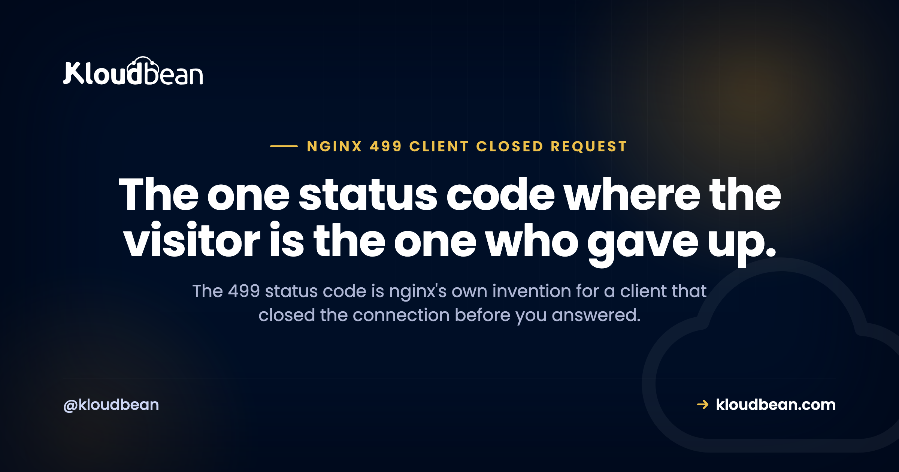

499 Status Code: The Client Hung Up, Not Your Server

You will not find 499 in any RFC, which is the first useful thing to know about it. nginx invented it to record a specific situation its logs otherwise could not describe: the client closed the connection before nginx had a chance to answer. Every other code in this neighbourhood describes a server that ran out of patience. This one describes a visitor who did. That difference decides everything about what you should do next, and for a lot of 499s the correct action is nothing at all.
It means the client closed the request before the server responded. It is non-standard, specific to nginx, and it appears only in your logs, never in a browser, because by the time nginx records it there is nobody left to send a page to. Most 499s are ordinary human behaviour: someone hit stop, closed the tab, navigated away, or lost mobile signal. The version worth investigating is a cluster of them on one slow endpoint, which means the client's timeout is shorter than your response time. And one operational detail catches people out: by default nginx cancels the upstream request too, so your application is killed part-way through the work it was doing.
Which party stopped waiting
Four codes get muddled together constantly because they all involve something giving up. They differ only in who.
| Code | Who gave up | On what | Where to fix it |
|---|---|---|---|
| 499 | The client | Waiting for your response | Your response time, not your config |
| 408 | The server | Waiting for the request to finish arriving | Read timeouts |
| 504 | The proxy | Waiting for the upstream to answer | Proxy timeouts, slow work |
| 502 | Nobody waited | The upstream was unreachable or died | The process itself |
Read down that first column and the practical consequence is obvious. Three of these four are yours to configure. The 499 is not, because the connection was closed from the other end. This is why the most common response to a log full of 499s, raising nginx timeouts, achieves precisely nothing. There is no nginx timeout involved. nginx was still willing to wait. The client was not.
Most 499s are people, not faults
Before you treat this as an incident, work out whether anything actually went wrong.
Every one of these produces a completely legitimate 499:
- Someone clicks a link, changes their mind, and hits back or closes the tab.
- A visitor on a train goes through a tunnel.
- A user double-clicks a submit button, and the browser abandons the first request.
- Your own front end cancels an in-flight request, which is standard practice for a search-as-you-type box or anything using an abort signal on unmount.
- A health checker or scanner opens a connection and drops it.
- A mobile app is backgrounded mid-request by the operating system.
That last category is worth dwelling on if you run an API for a mobile client, because it will produce a constant background hum of 499s that means nothing. A single-page app with a typeahead can generate them by design: every keystroke cancels the previous request, and every cancellation is a 499 in your log. Nothing is broken. Your front end is behaving correctly.
So the useful question is never how many 499s you have. It is whether they are spread thinly across many URLs, or piled onto one.
# Are the 499s scattered, or concentrated on one endpoint?
awk '$9 == 499 {print $7}' /var/log/nginx/access.log | sort | uniq -c | sort -rn | head -20
# What share of all requests are they? Context matters more than the raw count.
awk '{t++} $9 == 499 {c++} END {printf "499s: %d of %d (%.2f%%)\n", c, t, c/t*100}' /var/log/nginx/access.logThinly spread, low percentage, no pattern: that is human behaviour, and you can stop here. Concentrated on one or two paths: keep reading, because you have found something.
A cluster of 499s is a latency alarm in disguise
This is the reframing that makes the code worth understanding, and it is the reason 499s are worth logging at all.
Clients have their own timeouts. A browser's fetch may be wrapped in a deadline, a mobile app's HTTP library ships with a default, an internal service calling you has a client timeout set by whoever wrote it, and a payment provider calling your webhook has one you do not control. When your response takes longer than that number, the client closes the connection and you record a 499.
Which means a spike of 499s on a single endpoint is telling you something quite precise: that endpoint got slower than its callers are willing to tolerate. The 499 is not the problem. It is the symptom of a latency problem that would otherwise be invisible, because nothing in your stack errored. Your application was working away happily. Nobody was listening any more.
So treat the 499 count on a path as a proxy for how close that path runs to its callers' patience. The fix lives in the endpoint: the slow query, the external API call with no timeout of its own, the report generated inside a web request. The 504 guide covers the same causes from the other direction, and if the work is genuinely long, it does not belong in a request at all.
The part that actually costs you: nginx cancels your upstream
Here is the behaviour that turns a harmless log entry into a real bug, and it is the least known thing about 499.
When the client aborts, nginx does not politely let your application finish. By default it closes the upstream connection too. The directive is proxy_ignore_client_abort, and its default is off, which means client aborts are not ignored: they propagate. Your PHP process or Node handler is cut off mid-execution.
Consider what that means for a request that was doing something. A payment captured but the confirmation row never written. Two of three database writes committed with no transaction wrapping them. A file uploaded to storage with no record pointing at it. None of this raises an error anywhere, because from your application's perspective the process simply stopped. You get a 499 in the access log and a quietly inconsistent database.
Two ways to deal with it, and they are not equivalent:
| Approach | What it does | When it is right |
|---|---|---|
| Wrap the work in a transaction, make handlers idempotent | An interrupted request leaves no partial state, and a retry is safe | Almost always. This is the real fix. |
proxy_ignore_client_abort on; | nginx lets the upstream run to completion even though nobody is waiting | Narrowly. It stops the truncation, and it also lets abandoned requests keep consuming workers. |
Be careful with the second one. Turning it on globally means every cancelled request still costs you a full worker slot for its full duration, which under load is a way to exhaust your capacity with work nobody will ever see. If you use it, scope it to the specific location that needs it rather than the whole server.
The structural answer is the first row, and it retires the whole class of problem: if your write path is transactional and your handlers are idempotent, a client hanging up becomes genuinely uninteresting. That is worth more than any nginx directive.
Why you never see a 499 page
A small point that saves confusion when someone asks you to add a custom error page for it.
There is nothing to send it to. The connection is already closed when nginx writes the log line, so 499 exists purely as a record of something that happened. This is the same pattern as 408 in nginx, where the status is largely written to logs rather than delivered to clients, and it is why error_page 499 is not a meaningful thing to configure. The 408 guide goes into that log-only behaviour in more detail.
It also explains why 499 is missing from status code references. It is nginx's private extension, not part of the HTTP specification, so other servers use different numbers or nothing at all for the same event. If you move a service behind a different proxy or a cloud load balancer, expect the same client behaviour to show up under a different code, which is worth remembering before you build a dashboard that filters on the literal number 499.
What to do, in order
Establish the share, not the count. A few hundred 499s a day out of millions of requests is background noise. The same number out of ten thousand requests is a signal. Use the second command above.
Group by path. Concentration is the whole diagnosis. Scattered means people, clustered means latency.
Compare the clustered path's response time against its callers' timeouts. If your slowest endpoint takes eight seconds and the calling client gives up at five, you have found the answer and it has nothing to do with nginx.
Make that endpoint faster, or move the work out of the request. Cache what is expensive, index what is slow, and push genuinely long jobs to a queue so the request returns immediately with a job identifier. Managed Redis is the usual home for the caching half of that.
Audit whatever that endpoint writes. Given the cancellation behaviour above, any path producing lots of 499s is a path that has been interrupted mid-write many times. Check for orphaned rows and half-finished records before you assume nothing happened.
Do not raise nginx timeouts. Written twice deliberately, because it is the most common wasted afternoon on this error. nginx was not the one who quit.
How much of 499 Status Code is a hosting question
The limit first, and it is a real one. A visitor closing their laptop is not something any platform can prevent, and a client library's timeout set by someone else's engineering team is not yours to change. A large share of your 499s will always be exactly that, and the honest goal is to recognise them rather than fix them.
What helps is the correlation, because this diagnosis is entirely about putting two numbers side by side. On Kloudbean the access and error logs sit in the same dashboard as server health metrics, so checking whether a 499 cluster lines up with a latency climb or a resource ceiling does not mean stitching together three tools. The reverse proxy is managed, so the configuration those 499s pass through is maintained rather than something edited once and forgotten. Managed Redis is available for the caching that usually fixes the underlying slowness, and managed databases across six engines for the query side. Seven cloud providers, free SSL, and free migration assistance if you are bringing something across.
The boundary is the usual one. Server, stack, TLS, backups and patching sit with the platform. The slow endpoint that made the client give up is application work, and it stays yours.
More on 499 Status Code
The rest of the family, sorted by who quit: 408 Request Timeout when the server stopped waiting for the request, 504 Gateway Timeout when the proxy stopped waiting for the upstream, and 502 Bad Gateway when there was nothing to wait for. If your application threw instead, 500 Internal Server Error. For a connection cut at the transport layer rather than closed deliberately, ERR_CONNECTION_RESET. On the proxy layer itself, nginx as a reverse proxy for Node and cloud load balancers explained. To make these logs answerable rather than a pile of awk, structured logging.
Put the 499 count next to the latency graph.
Managed servers across seven clouds with access and error logs beside server health metrics in one dashboard, a managed reverse proxy, managed Redis for caching, and managed databases across six engines. Free SSL issued and renewed. Free migration assistance included. Start at kloudbean.com or see pricing.
Logs and metrics together · Managed proxy · Managed Redis · Six database engines · Free SSL
FAQ
What does a 499 status code mean?
It means the client closed the connection before the server sent a response. It is nginx's own non-standard code, recorded in the access log so that this event is distinguishable from a server-side failure. Because the connection is already gone, no page is ever delivered with this status.
Is 499 an error I need to fix?
Usually not. Most 499s are ordinary behaviour: someone closed a tab, navigated away, lost mobile signal, or a front end cancelled an in-flight request on purpose. The version worth investigating is a cluster of 499s on one endpoint, because that points at a response slow enough that callers give up.
Why is 499 not in the list of HTTP status codes?
Because it is not part of the HTTP specification. nginx defined it for its own logging, so it does not appear in any RFC and other servers do not use it. A different proxy or a cloud load balancer will record the same client behaviour under a different code, which is worth knowing before building alerts that match on the number itself.
What is the difference between 499 and 504?
Who gave up. A 499 means the client stopped waiting for your response. A 504 means the proxy stopped waiting for the upstream to answer. They can even describe the same slow endpoint from opposite ends, so seeing both on one path is a strong indication that the endpoint is simply too slow.
Does raising nginx timeouts fix 499 errors?
No, and this is the most common wasted effort on this error. nginx was still willing to wait when the connection closed, so no nginx timeout was involved. The client's own deadline is what expired, and you often do not control it. The real fix is making the endpoint fast enough that callers stop cancelling.
Does a 499 stop my application code from finishing?
Yes, by default. The proxy_ignore_client_abort directive defaults to off, so a client abort propagates and nginx closes the upstream connection. Your handler is cut off part-way through, which can leave partial writes with no error recorded anywhere. Wrapping the work in a transaction and making handlers idempotent is the durable fix.
Should I turn on proxy_ignore_client_abort?
Only narrowly, and scoped to a specific location rather than the whole server. It does stop the truncation, but it also means every abandoned request keeps consuming a worker for its full duration, which under load lets cancelled work exhaust your capacity. Transactional, idempotent handlers are the better answer.
Why did 499s appear after I added a load balancer?
Because a load balancer closing an idle connection looks to nginx exactly like a client hanging up. Compare the load balancer's idle timeout against your real response times. If responses regularly outlast that timeout, the balancer is the client that keeps quitting.